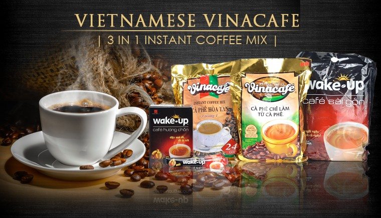

Trung Nguyen coffee is the most famous for its strong taste and aroma. It is the leading local brand in Vietnam and a big exporter - you can find Trung Nguyen coffee in over 70 countries in the world. There is a wide range of products diverse in the mix of coffee beans and processing methods.
Trung Nguyen coffee has 3 main types, instant coffee, roasted coffee and distinetive (weasel) one.

Fosusing more on the mild side,Vina cafe is among the best choices for instant blended coffee. This brand is most famous for its creamy,hazelnutty flavor for those with a sweet tooth. Vina coffee has been a coffee of our childhood and still most common among Vietnamese households. The most popular ones are Vinacafe 3-in-1, Wakeup cafe with Wealse Flavor.
NESCAFE- the famous worldwide brand, comes with a lot of choices for the discerning market of Vietnam coffee connoissuers. Among their products, instant ones are top of mind. Their Blended coffee comes in differrent levels of strong tastes that can be no less delicious than their ground coffee counterparts. Their NESCAFE cans/Mocha/Latte are good choice when you want just a pack of pack of ready-made goodness.